iTest User's Guide
FlexEdit
Product Version 4.5
Prepared By
ADT Software Engineering
A&D Confidential Document Distributable only to A&D Customers
Copyright A&D Company, Limited
A&D Technology Inc.
FlexEdit is a standalone iTest application used by operators to complete a workflow of routine maintenance tasks and collect runtime data while iTest is active. FlexEdit uses a single interface, consisting of four separate panes for tasks, messages, references, and editors. The FlexEdit framework is typically pre-configured for operators; however, it can be customized to better suit the testing environment. For more information on how to customize FlexEdit, refer to the FlexEdit Design Guide.
This document discusses the general aspects of FlexEdit such as its general interface, performing tasks, using diagnostic tools, and more.
These requirements are seen as essential and have been designed into FlexEdit:
There are some guidelines that the framework has to abide by to work within the iTest architecture:
FlexEdit utilizes XML files to define the interface's configuration. When launching FlexEdit, you can specify which XML file to open via the following command-line argument:
 |
NOTE: | If an XML file is not specified, then the default FlexEdit.xml file will be used. |
Syntax:
FlexEdit.exe /xml <XML file path>
Example:
FlexEdit.exe /xml C:\ADT\iTest4.3\Execute\FlexEdit.xml
The following command-line argument can be used to open a specified file in its associated editor:
Syntax:
FlexEdit.exe /xml <XML file path> /file <file path>
Example:
FlexEdit.exe /xml C:\ADT\iTest4.3\Execute\FlexEdit.xml /file C:\ADT\iTest4.3\Solution.Demo\TestNotes.txt
You can also use the following command-line argument to launch a specific task in FlexEdit:
|
NOTE: | For task names that contain spaces, you must use double quotes around the task name. |
Syntax:
FlexEdit.exe /xml <XML file path> /task <task name>
Example:
FlexEdit.exe /xml C:\ADT\iTest4.3\Execute\FlexEdit.xml /task "Test Notes"
|
NOTE: | Test Manager, SolutionBuilder, and AlarmStatus must not be running in order to launch FlexEdit. |
FlexEdit can be launched using the VCL programming language. This can be difficult because of nested double quotes. You can use the escape sequence ~" to pass the double quote to the next layer.
|
NOTE: | In the example below, the /s is an argument to FileServices. |
Example:
+0.0 MESSAGE "\\.\mailslot\FileServices>>$Execute ~"FlexEdit.exe /task ~"Engine Data~"~ /s valSysFileSvcs"
The FlexEdit interface consists of four panes and a control menu. These panes are used for completing tasks, viewing diagnostic messages, and searching for channel information. The image below represents a general display of the FlexEdit interface:
FlexEdit Interface
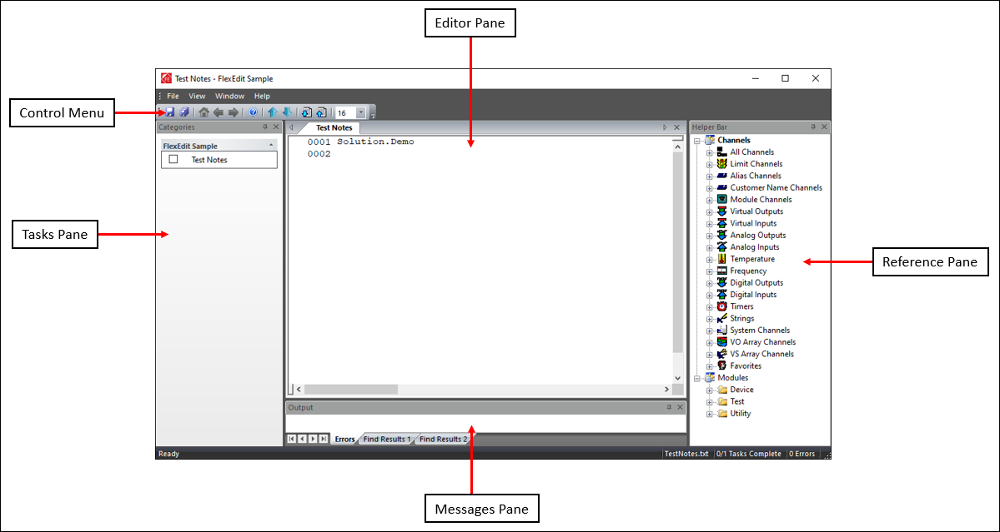
Pane Descriptions
| Pane | Description |
| Tasks | A list of workflow categories and various tasks that must be completed by the operator. For more information, refer to the Performing Tasks section below. |
| Editor | Enables the operator to perform configurations and calibrations, as necessary, for testing. For more information, refer to the FlexEdit Editors documentation. |
| Reference | A tree node list of channels and modules. For more information, refer to the Searching for Information section below. |
| Messages | Communicates diagnostic information. This pane contains the following tabs: Errors, Find Results 1, and Find Results 2. For more information, refer to the Using Diagnostic Tools section below. |
You can modify the location of each pane (except for the Editor pane) via the Docking feature. To undock a pane, select the top of the pane and drag it away from its current location. The possible places you can redock the pane display on the interface. Hover over one of the options to highlight it; when you release the mouse, the pane will dock in that location.
Docking/Undocking Panes
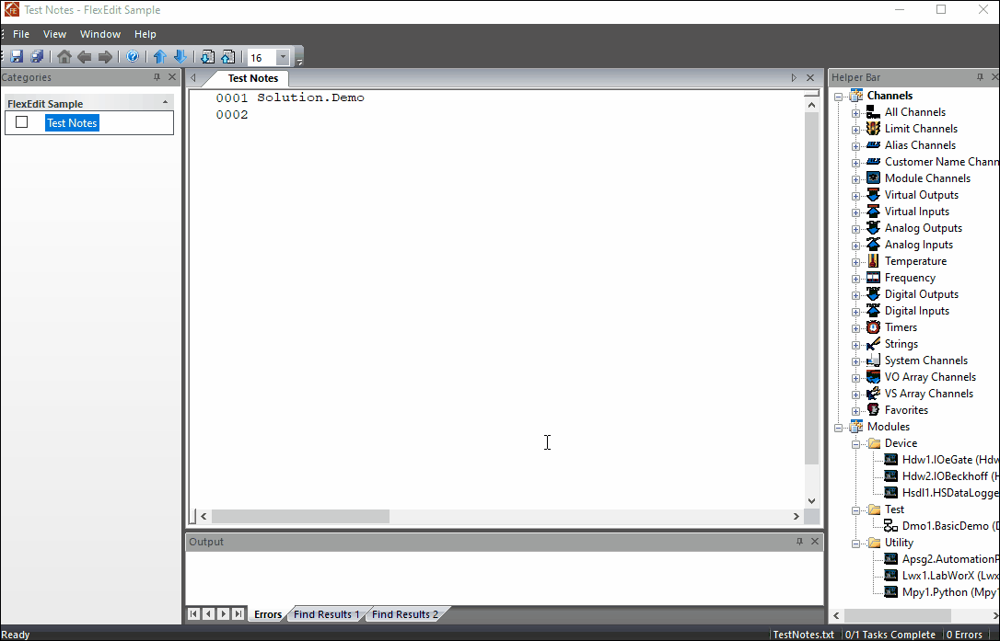
The Tasks pane is comprised of workflow categories and various tasks that must be completed by the operator. Clicking a workflow category will expand its contents and display the tasks that must be completed within it. Tasks represent the different assignments performed by the operator to prepare for upcoming tests or to influence tests that are currently running. The list of workflow categories and tasks is defined in the XML file; refer to the FlexEdit Design Guide for more information.
Tasks Pane
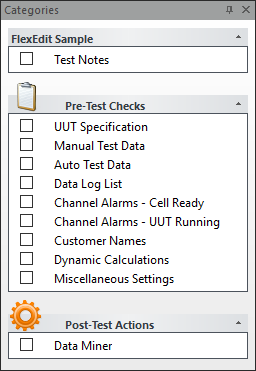
As the operator completes the various tasks for each category, you can click the checkbox next to the name of the task to mark it as "done." Depending on the design of your FlexEdit.xml file, the checkbox may automatically be checked when the tasks are complete. The total number of tasks and the number of completed tasks are displayed in the status bar.
Marking Tasks as Done
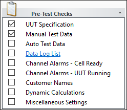
Tasks Complete
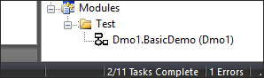
To navigate through the various tasks, you can use the Up and Down arrow buttons to navigate through the task list in sequential order. These buttons are located in the control menu above the panes.
Navigation Buttons
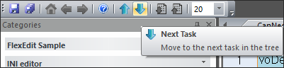
The Reference pane, also referred to as the Helper Bar, contains a list of channels and modules that can be used as references. You can drag and drop channels from the Helper Bar to the Editor pane. You can also right-click within the Helper Bar to manually search for a channel or view a channel's properties.
Reference Pane
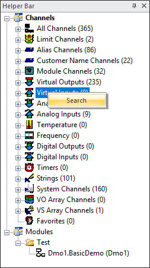
Drag and Drop Channels
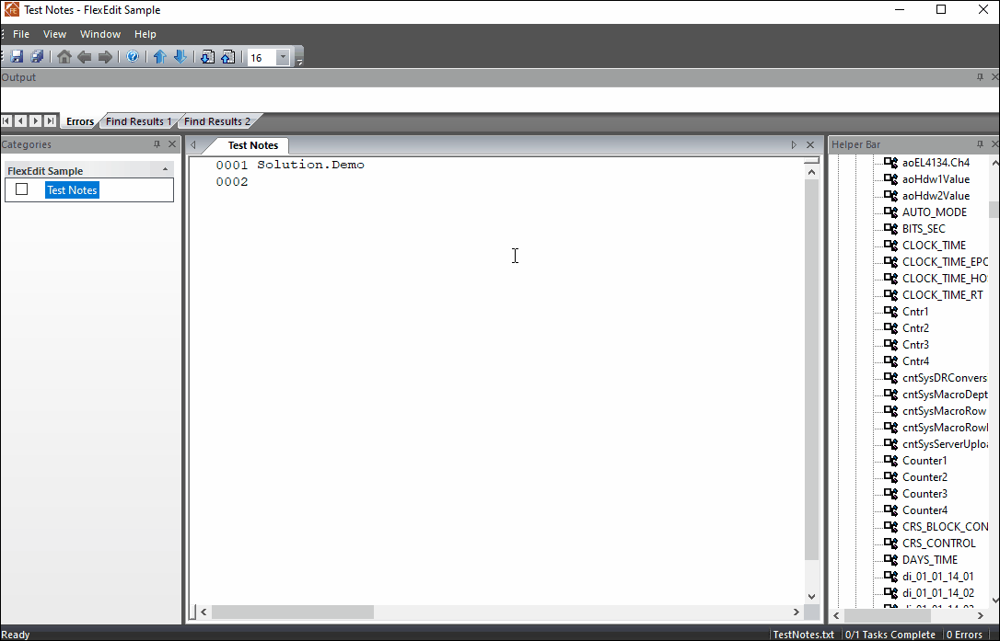
To manually search for a channel, right-click within the Helper Bar and select the Search option. The Channel Search dialog displays, which is used to define the criteria for your channel search (i.e., sub string, name, and type). Clicking the checkbox near the bottom of the dialog will display the outputted search results to a new tree node.
Channel Search Dialog
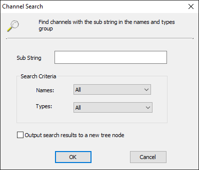
Search Results
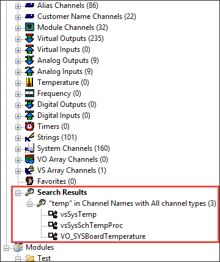
To view a channel's properties, right-click on a channel within the Helper Bar and select the Properties option. The Channel Properties dialog displays. The property options that are listed in the Channel Properties dialog are dependent on the channel type.
Properties
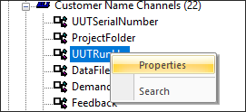
Channel Properties
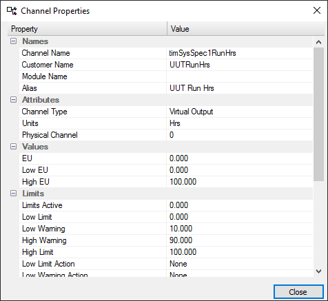
The Messages pane communicates any errors or results that occur in FlexEdit. When FlexEdit is started, any initialization errors that occurred when parsing the FlexEdit.xml will display in the Errors tab.
Error Messages
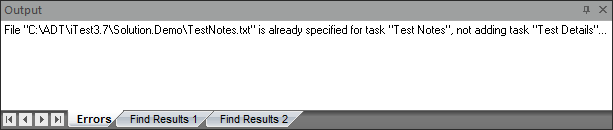
The Find in Files feature is accessible in FlexEdit by selecting File > Find in Files... from the menu bar. The Find In Files dialog displays, where you can use the various search field settings to refine your search. The search results display in the Find Results 1 tab by default; you can use the Display in Find 2 checkbox in the Find In Files dialog to display the search results in the Find Results 2 tab.
Find What
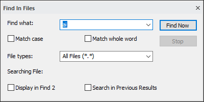
Results
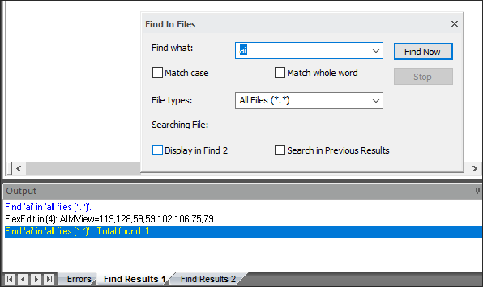
Configurations can be saved and outputted as a .zip file either to a LabCentral server or to a local folder. This local folder can either be on the same PC or can be a network share.
After selecting File > Save Configuration, you will be prompted to select a filename from the drop-down menu or manually enter a new filename. Comments can be entered in the box below. In addition, you can select an existing file and its comments to be overwritten by checking the file's checkbox.
Save Configuration
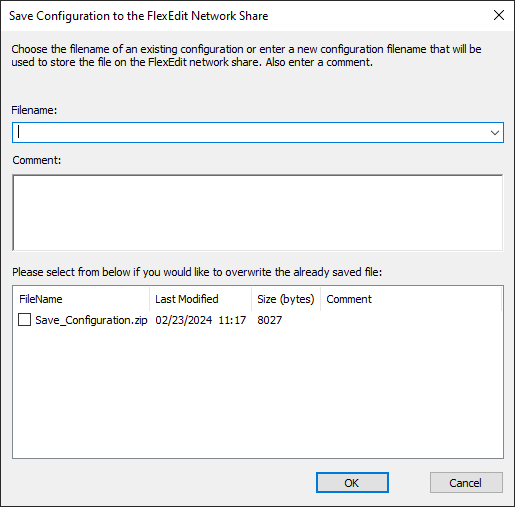
The Save Configuration feature can be disabled by setting the voSysFlexEditSaveDisable channel to 1 or greater. In addition to disabling the File > Save Configuration menu option; this setting will also disable the Server Upload button. The voSysFlexEditSaveDisable channel is not automatically created by iTest.
The Restore Configuration feature allows you to restore files to a previous state. After selecting File > Restore Configuration, you will be prompted to select from previously saved versions of the file. File states can be sorted by name, size, or last date of modification.
Restore Configuration
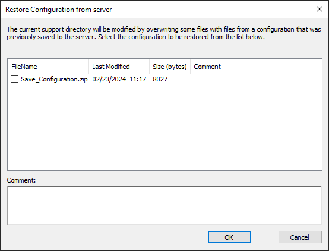
The Restore Configuration feature can be disabled by setting the voSysFlexEditRestoreDisable channel to 1 or greater. In addition to disabling the File > Restore Configuration menu option, the Server Download button and the File > Restore Tasks... menu option will be disabled. You can also use the <disablemenulist> and <enableoverwrite> tags in the FlexEdit.xml file to disable or limit the ability to restore configurations and tasks.
The Restore Tasks feature allows you to restore selected tasks from a saved configuration for the solution. After saving a configuration, select the File > Restore Tasks... menu option. This will open the Restore Tasks dialog.
 |
WARNING: | If a task has "Restore Tasks" listed as a disabled menu item in the <disablemenulist> tag, then the task cannot be selected for restoration. The task will be grayed out in the Restore Tasks dialog, and its checkbox cannot be checked. |
Restore Tasks Dialog
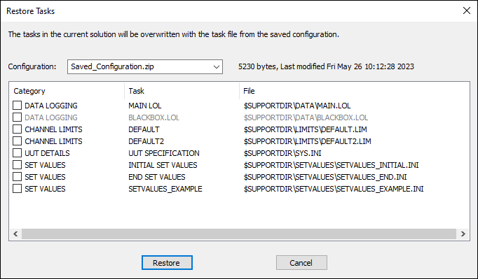
Click the checkboxes next to the tasks you want to restore then click the Restore button. Note that tasks in the current solution will be overwritten with the task files from the saved configuration.
Select Tasks
The Server Upload feature allows you to save a file to LabCentral or to a local folder. This local folder can either be on the same PC or can be a network share.
To launch the Server Upload dialog, select a file in FlexEdit, and then click the Server Upload ( ) button. Enter the filename and any applicable comments in the Filename and Comment fields. In addition, you can select an existing file and its comments to be overwritten by checking the file's checkbox.
Server Upload Dialog
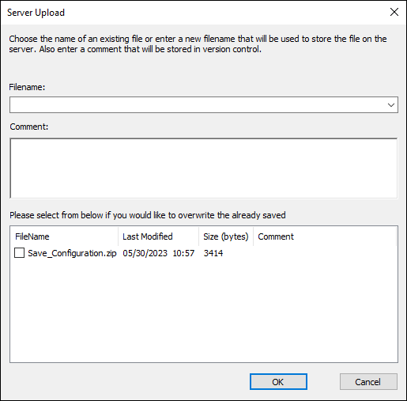
The Server Download feature allows you to download a file from LabCentral or a local folder. This local folder can either be on the same PC or can be a network share.
To launch the Server Download dialog, select a file in FlexEdit, and then click the Server Download ( ) button. Select a file from the provided list, and enter any applicable comments.
Server Download Dialog
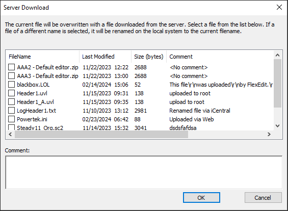
FlexEdit supports the use of the following mailslot messages through \\.\mailslot\FlexEdit:
Mailslot Messages
| Mailslot Message | Description |
| DIE | This mailslot message closes FlexEdit. If there are modified open documents, the user is prompted to save the changes prior to exiting. |
| SAVEALL | This mailslot message causes FlexEdit to save any open, modified documents. An optional channel name can be specified with this message. If so, then the channel is set to "Executing" while saving, and then set to "Completed" when all saving is complete. |